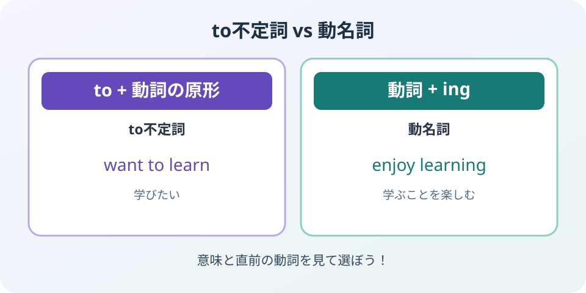

to不定詞と動名詞の違い｜3用法・動詞の使い分け・入試頻出例文
どちらも「〜すること」と訳せるのに、なぜ to study と studying を使い分ける？ 意味・文型・動詞の相性の3つから整理します。
このページで学べること
to不定詞と動名詞の働き・後ろに続けられる動詞・意味が変わる定番表現を、受験の空所補充に使える形で覚えます。
to不定詞と動名詞は何が違う？
to不定詞は to + 動詞の原形、動名詞は 動詞の -ing形。どちらも文中で名詞のように「〜すること」を表せます。

| 形 | 例文 | 意味 |
|---|---|---|
| to + 原形 | I want to learn English. | 私は英語を学びたい。 |
| V-ing | I enjoy learning English. | 私は英語を学ぶことを楽しんでいる。 |
「to＝未来・ing＝過去」と暗記するのは危険です。傾向として to はこれからの行動・目的に結びつきやすく、-ing は活動そのものに焦点が当たりやすいですが、実際の選択は動詞や文型から判断します。
to不定詞の3用法を見分ける
| 用法 | 例文 | 見分ける質問 |
|---|---|---|
| 名詞的 | To read books is fun. | 「何が楽しい？」＝本を読むこと |
| 形容詞的 | I have a book to read. | 「どんな本？」＝読むべき本 |
| 副詞的（目的） | I came here to study. | 「何のために？」＝勉強するため |
名詞的用法は主語・目的語・補語になれます。形容詞的用法は名詞を説明し、副詞的用法は目的などを補います。副詞的用法には「〜してうれしい」の感情の原因などもあり、目的だけに限りません。
I have something to drink. の to drink は something を説明しているので形容詞的用法。「飲むために何かを持っている」と機械的に判断しないようにしましょう。
一方、動名詞は名詞として働きます。例：Swimming is good exercise.（泳ぐことはよい運動だ。）
後ろに to を取る動詞・-ing を取る動詞
| to不定詞を目的語に取る | 動名詞を目的語に取る |
|---|---|
| want to do（〜したい） hope to do（〜することを望む） decide to do（〜すると決める） plan to do（〜する予定だ） promise to do（〜すると約束する） | enjoy doing（〜するのを楽しむ） finish doing（〜し終える） avoid doing（〜するのを避ける） mind doing（〜するのを嫌がる） give up doing（〜するのを諦める） |
○ She decided to leave early.
× She decided leaving early.
○ He enjoys playing tennis.
× He enjoys to play tennis.
like / love / start / begin などは両方の形が使えることがあります。意味や用法がいつも完全に同じとは限らないため、問題文の文脈も確認しましょう。
stop・remember・try は形で意味が変わる
| 表現 | 意味・例 |
|---|---|
| stop doing | 〜するのをやめる：He stopped smoking.（彼は喫煙をやめた） |
| stop to do | 〜するために立ち止まる／いったん止める：He stopped to smoke.（彼はタバコを吸うために立ち止まった） |
| remember doing | 〜したのを覚えている：I remember locking the door. |
| remember to do | 忘れずに〜する：Remember to lock the door. |
| try doing | 試しに〜してみる：Try restarting the computer. |
| try to do | 〜しようと努力する：I tried to open the door. |
入試問題の解く順序と、混乱しやすい点
① 直前の動詞を見る：enjoy / decide などがあれば、後ろに続く形を選びます。
② 意味が変わる動詞か確認：stop / remember / try は文の意味から判断。
③ to の役割を見る：目的の to不定詞と、前置詞の to を混同しない。
I look forward to seeing you.（お会いするのを楽しみにしています。）
この to は不定詞の to ではなく前置詞なので、後ろは seeing です。
He is used to getting up early.（彼は早起きに慣れている。）も同じです。
また、be used to doing（〜することに慣れている） と used to do（以前は〜していた） も別の表現です。
確認問題に挑戦！
全5問。答えを考えてから「解答と解説を見る」を押してね。
I enjoy ( ) books in English.
解答と解説を見る ＋
reading
enjoy の後ろは動名詞。I enjoy reading books in English.（英語で本を読むことを楽しんでいる）
She decided ( ) abroad next year.
解答と解説を見る ＋
to study
decide の後ろは to不定詞。decide to do ＝「〜することに決める」。
I stopped ( ) my phone during class.
解答と解説を見る ＋
checking
stop checking ＝「確認するのをやめる」。stop to check は「確認するために立ち止まる」。
Remember ( ) your ID tomorrow.
解答と解説を見る ＋
to bring
tomorrow とあるのでこれからすべきこと。remember to do＝「忘れずに〜する」。
I went to the library ( ) for the exam.
解答と解説を見る ＋
to study
「勉強するために」＝目的を表す副詞的用法の to不定詞。
to不定詞＝to＋原形、動名詞＝V-ing。まず動詞との組み合わせを見て、stop・remember では文脈から意味を選ぼう。
ここまで読めたら、ひと区切り。
5問解けたら学習済みにして、関連記事で復習しよう。
StudyMasterの無料学習コンテンツです。AIを補助的に用いて作成しています。英語の例文や解答は、必要に応じて辞書や教科書とも照合してください。
公開・更新：2026年11月16日